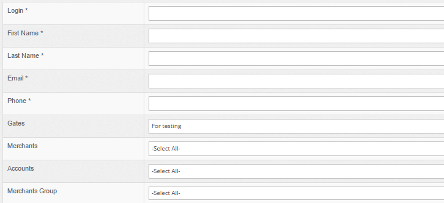
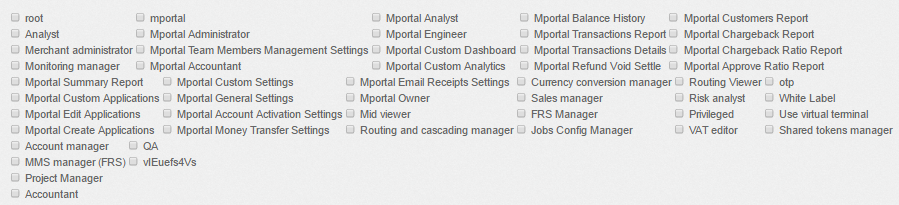
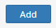
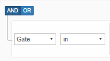
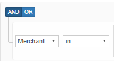
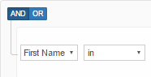
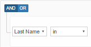
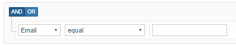
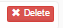

Section: Home User Management User Add
Description:
Section Add allows to create a new one user in Admin portal and assign a role.
For creating a new user in admin panel fill up the fields
| Field | Description | Example |
|---|---|---|
| Login* | login of a user in admin panel | @active_test |
| First Name* | first name of a user | John |
| Last Name* | last name of a user | Doe |
| Email* | email of a user | johndoe@test.com |
| Phone* | phone of a user | +1234567890 |
| Gates | ability to select a gate from several and set up the permission by only to this gate | Gateway for testing |
| Merchants | ability to select a merchant from several and set up the permission by only to this merchant | Test merchant |
| Accounts | ability to select an account from several and set up the permission by only to this account | Test acoount |
| Merchants Group | ability to select a merchant group from several and set up the permission by only to this merchant group | Test merchant group |
Note | Always fill up the fields with *
Screenshot from Admin panel :

Next step is to select the role for user
| Role | Description |
|---|---|
| Root | The main role in Admin portal. All features are available. |
| Analyst | Analytic reports are available. |
| Merchant administrator | Manage merchants, accounts. Create users. |
| Monitoring manager | Monitor critical metrics. |
| Mportal Summary Report | Only Mportal Summary Report are available. |
| Mportal Custom Applications | Only Mportal Custom Applications are available. |
| Mportal Edit Applications | This role allows to edit applications in Merchant portal. |
| Mportal Create Applications | This role allows to create applications in Merchant portal. |
| Account manager | Account's features are gate management, merchant management, account management, bank management, but only to watch without change settings. |
| MMS manager (FRS) | MMS manager for FRS system. |
| Project Manager | Project manager features. |
| Accountant | Accountant features. |
| mportal | Merchant portal features. |
| Mportal Administrator | Administrator of Merchant portal. |
| Mportal Team Members Management Settings | Features of Mportal Team Members Management Settings. |
| Mportal Accountant | Features of Mportal Accountant. |
| Mportal Custom Settings | Merchant portal Custom Settings. |
| Mportal General Settings | Merchant portal General Settings. |
| Mportal Account Activation Settings | Merchant portal Account Activation Settings. |
| Mportal Money Transfer Settings | Merchant portal Money Transfer Settings. |
| QA | QA tools. |
| Mportal Analyst | Analyst of Merchant portal. |
| Mportal Engineer | Engineer of Merchant portal. |
| Mportal Custom Dashboard | Merchant portal Custom Dashboard. |
| Mportal Custom Analytics | Merchant portal Custom Analytics. |
| Mportal Email Receipts Settings | The features for Merchant portal Email Receipts. |
| Mportal Owner | Merchant owner role. |
| Mid viewer | Possibility to watch the list of MIDs. |
| Routing and cascading manager | Possibility to setup or change the settings for routing and cascading. |
| Mportal Balance History | Features for Merchant portal Balance History. |
| Mportal Transactions Report | Possibility to view Transactions Report in Merchant portal. |
| Mportal Transactions Details | Possibility to view Transactions Details. |
| Mportal Refund Void Settle | Features for making Refund, Settle, or Void in Merchant portal. |
| Currency conversion manager | Possibility to use Currency conversion. |
| Sales manager | Sales manager features. |
| FRS Manager | Manager of FRS section. |
| Jobs Config Manager | Possibility to change configuration. |
| Mportal Customers Report | Merchant portal Customers Report is available. |
| Mportal Chargeback Report | Merchant portal Chargeback Report is available. |
| Mportal Chargeback Ratio Report | Merchant portal Chargeback Ratio Report is available. |
| Mportal Approve Ratio Report | Merchant portal Approve Ratio Report is available. |
| Routing Viewer | Possibility to view the routing settings. |
| Risk analyst | Tools and settings for Risk analyst. |
| Privileged | Privileged features. |
| VAT editor | Possibility to change VAT rate. |
| OTP | OTP settings. |
| White Label | Roles for White Label. |
| Use virtual terminal | Features for using virtual terminal. |
| Shared tokens manager | Features for sharing tokens between the accounts. |
Note | For choosing few roles press checkbox near the role.
Screenshot from Admin panel :

After all fields up the finish line is to press the button 
Section: Home User Management User List
Description:
Section List allows to find out a user in Admin portal.
For searching a user add the rule
Select the rule
| Rule name | Description | Screenshot |
|---|---|---|
| Gate | searching by gate |  |
| Merchant | searching by merchant |  |
| Account | searching by account |  |
| User | searching by user list |  |
| First name | searching by first name of user |  |
| Last name | searching by last name of user |  |
| Role | searching by user role |  |
| searching by user email |  |
For choosing few rules at a time press
For deleting one of rules press the button 
Note | You are able to use few rules together !
Example of searching result
| Gate Name | Merchant | Account | User Name | Role | First Name | Last Name | Actions | |
|---|---|---|---|---|---|---|---|---|
| Test gateway | Test merchant | John Doe | root | John | Doe | johdoe@test.com | ||
| Live gateway | Bob Doe | Account manager | Bob | Doe | bobdoe@test.com |
Details:
For making updates by the user press .
For deleting the user press .